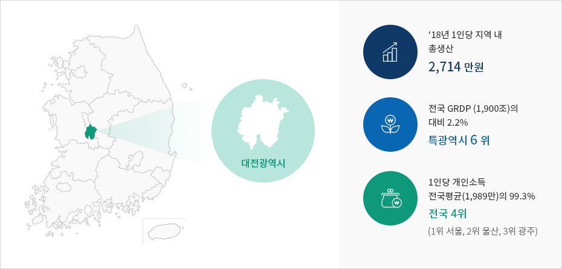

동북아의 허브도시, 대전에 투자하십시오.
지난 40여년 동안 대전은 과학 대한민국의 미래를 선도해 왔습니다. 대전은 대한민국에서 가장 투자하기 좋은 도시입니다.


대전 면적, 인구, 경제활동인구, 수출입 정보제공
| 면적 |
인구 |
경제활동인구 |
수출입 |
| 540km² |
147만 명 |
806천명 |
수출 4,049백만불
수입 3,172백만불
(수출입무역통계, 2019 기준)
|
※ 출처 : 대전광역시 통계자료, 2019.12 기준
연구개발과 지식산업의 중심지
대전은 대한민국을 대표하는 과학도시입니다. 우리나라 최고의 연구개발특구인 대덕연구단지에는 정부출연 연구기관과 기업연구소 클러스터가 형성되어 있으며 IT, BT등 최첨단 분야의 중소벤처기업들이 활발히 기업 활동을 펼치고 있습니다.
대한민국 행정의 중심
대전에는 정부대전청사, 교육사령부, 군수사령부가 위치하며 정부세종청사에도 인접해있습니다. 관세청, 조달청, 특허청 등 중앙행정기관이 밀집한 대전은 투자기업을 신속히 지원하기 위한 각종 인허가 원스톱 서비스를 제공합니다.
수준 높은 외국인 생활환경
대전에는 최고 수준의 외국인 생활 인프라가 구축되어있습니다. 국내 최초 국제표준화교육과정(IB)를 도입한 대전외국인학교와 양질의 외국인 전용 의료서비스기관이 위치해있습니다. 또한 국제과학비즈니스벨트 거점지구 내에 대전외국인투자지역(FIZ) 유치를 적극 추진하여 외국인 투자가들의 기업활동을 최대한 지원 할 계획입니다.
국제적인 신용도를 갖춘 투자적격지
세계 유수 신용평가기관으로부터 우수한 신용등급 평가를 받은 대전은 기업하기 좋은 1등 도시입니다. 2014년 일본 최고 신용평가사 JCR 7년 연속 "A+"등급, 2015년 무디스 신용등급 상위 3위에 해당되는 "Aa2"등급을 획득하며 투자적격지로서의 위상을 높였습니다.